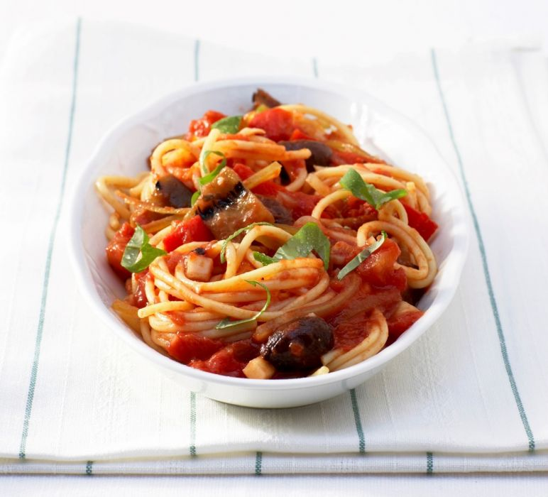

Spaghetti Napoli

Spaghetti napoli is a classic recipe originating in Italian cuisine. Pasta napoli originated in Naples. Spaghetti napoli original recipe is prepared with fresh, ripe tomatoes, which are combined with good quality olive oil, garlic, wine vinegar, basil and Parmesan shavings. The sauce for spaghetti napoli should be quite thick to thoroughly combine with the pasta. In addition, napoli sauce can be made in a spicy version, but there are also milder versions. Most importantly, pasta with napoli sauce should be made with fresh ingredients. Then certainly simple products will be transformed into a tasty dinner. We suggest how to make spaghetti napoli.
- spaghetti noodles 500g
- tomato 1kg
- onions 2pcs.
- garlic 2 cloves
- chili bell pepper 1pcs.
- olive oil 3 tablespoons
- wine vinegar 1 tablespoon
- cane sugar 0.5 tablespoon
- basil 6 leaves
- parmesan 2 tablespoon
- pinch of salt
- pinch of pepper
-
Spaghetti napoli: to begin with, fry diced onions in oil. Then you need to add to the onions peeled and diced tomatoes. Then to the whole thing you need to add chopped chili peppers (without seeds), finely chopped garlic and vinegar. When the napoli sauce evaporates and thickens, take the pot off the heat and season to taste with cane sugar, salt and peppe
-
The next step is:cook spaghetti pasta according to the recipe on the package. Then put the pasta on plates, pour warm sauce over it, sprinkle with freshly grated Parmesan cheese and garnish with basil leaves. The spaghetti napoli is ready to serve.